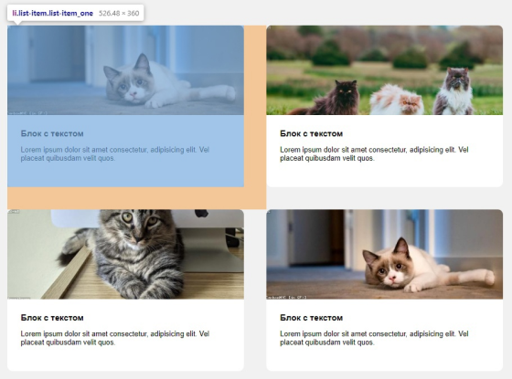

Отступы в вёрстке: margin и padding
В этой статье я рассмотрю самые популярные "стандартные" решения для сохранения смысла и хорошей читаемости вашего кода. Если точнее — речь пойдет об основных правилах организации отступов. Они сильно влияют на общую функциональность кода и, если всё сделано верно, позволяют легко вносить изменения в любую его часть. При этом другие части кода продолжат нормально работать.
Как это часто бывает, знание базовых принципов поможет проявить гибкость и выйти за их пределы. Эти знания особенно важны для начинающих, но также будут полезным напоминанием и для более опытных верстальщиков. Итак, поговорим о фундаментальных основах работы с отступами в вёрстке.
Отступ задается от предыдущего элемента к следующему: от первого ко второму, сверху вниз, слева направо.
ВАЖНО: margin всегда задают от предыдущего элемента к следующему.
Свойство margin необходимо только для того, чтобы отодвинуть своего соседа справа или снизу, поэтому используется margin-right и margin-bottom .
(!) Свойства margin-left margin-top и используются крайне редко.
Для padding верно обратное. Исключением является его применения в декоративных целях, например, для увеличения области ссылки.
Отступ внутри блока сверху или слева реализуется через padding-top и padding-left родителя.
Отступы, как правило, делают в направлении от предыдущего элемента к следующему. Так элемент не будет толкать сам себя.
Изначально элемент статичен, а его положение может меняться только под воздействием свойств других блоков или свойств родителя.

Отступ задается последнему возможному элементу в DOM-дереве
Вообще, margin задают исключительно между соседними элементами DOM-дерева. Для примера, посмотрите на этот список:


Отступ делают за счёт соседних элементов, а не дочерних:

Казалось бы, можно задать отступ параграфу, либо обёртке для достижения той же цели. Внешне останется все точно также, но так делать не рекомендуется.
Предыдущий пример был достаточно простым, но бывает вложенность значительно больше.

В случае с заголовком, если ему необходим отступ сверху, последним элементом будет section. Именно для него задается padding-top, а не div с классом container. Свойства margin, которые стоят по умолчанию необходимо обнулить.

Это необходимо для более простого поиска отступов в будущем — для вас или того, кто будет верстать после вас. Кроме того, возможны серьёзные проблемы при динамическом дублировании или выводе вёрстки с нестандартной структурой отступов.
Для последнего элемента группы отступ всегда обнуляется
Для наглядности возьмём наш предыдущий пример с рецептами
Между рецептами расстояние одинаковое. Можно заметить, что и до следующего блока расстояние такое же.

В соответствии со вторым принципом: последний margin обнуляется, а нижний отступ задаётся через padding для section. Я чаще всего задаю padding для секции с обоих сторон, если расстояние между секциями 100px задаю секциям padding-top:50px и padding-bottom:50px.


Для большего понимания рассмотрим другой пример, который часто встречается на практике:


Здесь нас интересует отступ между пунктами меню и списком с кнопкой поиска. Отступы между пунктами меню задаются так:

Советую использовать псевдоклассы :last-child чаще других, например так: